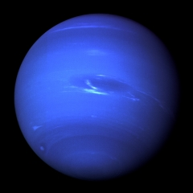

Neptune
Neptune is the eighth planet from the Sun and last of the known planets. While it is the third largest planet with respect to mass, it is only the fourth largest in terms of diameter. Due to its blue coloration, Neptune was named after the Roman god of the Sea.
- It takes Neptune 164.8 Earth years to orbit the Sun. On 11 July 2011, Neptune completed its first full orbit since its discovery in 1846.
- Neptune was discovered by Jean Joseph Le Verrier. The planet was not known to ancient civilizations because it is not visible to the naked eye. The planet was initially called Le Verrier after its discoverer. This name, however, quickly was abandoned and the name Neptune was chosen instead.
- Neptune is the Roman God of the Sea. In Greek, Neptune is called Poseidon.
- Neptune has the second largest gravity of any planet in the solar system – second only to Jupiter.
- The orbit path of Neptune is approximately 30 astronomical units (AU) from the Sun. This means it is around 30 times the distance from the Earth to the Sun.
- The largest Neptunian moon, Triton, was discovered just 17 days after Neptune itself was discovered.
- Neptune has a storm similar the Great Red Spot on Jupiter. It is commonly known as the Great Dark Spot and is roughly the size of Earth.
- Neptune also has a second storm called the Small Dark Spot. This storm is around the same size as Earth’s moon.
- Neptune spins very quickly on its axis. The planets equatorial clouds take 18 hours to complete one rotation. The reason this happens is that Neptune does not have a solid body.
- Only one spacecraft, the Voyager 2, has flown past Neptune. It happened in 1989 and captured the first close-up images of the Neptunian system. It took 246 minutes – four hours and six minutes – for signals from Voyager 2 to reach back to Earth.
- The climate on Neptune is extremely active. In its upper atmosphere, large storms sweep across it and high-speed solar winds track around the planet at up to 1,340 km per second. The largest storm was the Great Dark Spot in 1989 which lasted for around five years.
Source: https://theplanets.org/neptune/